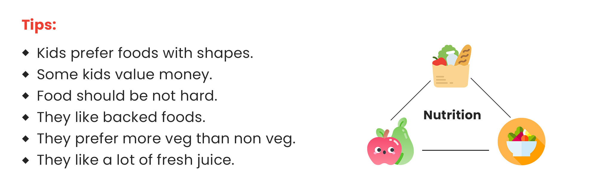
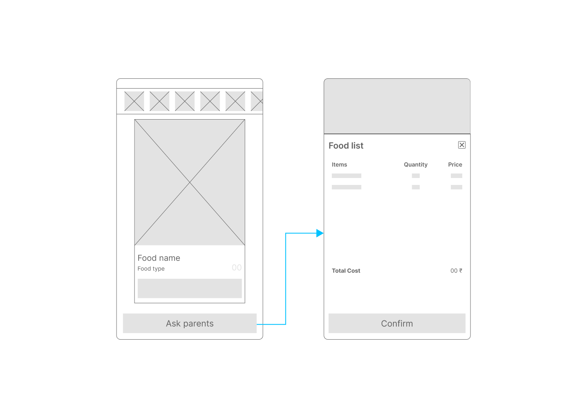
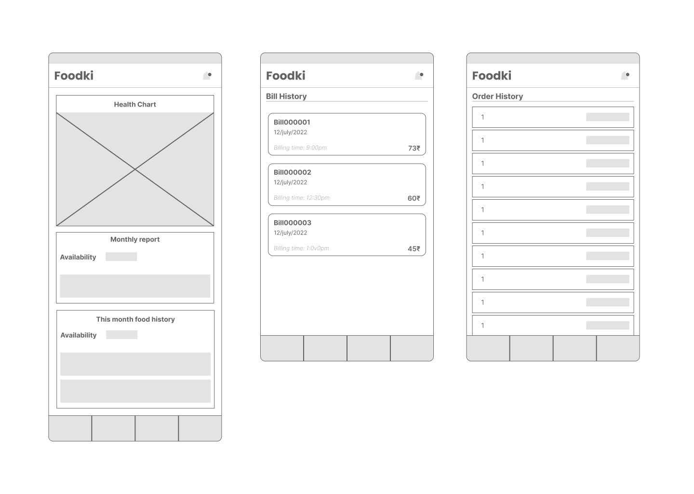
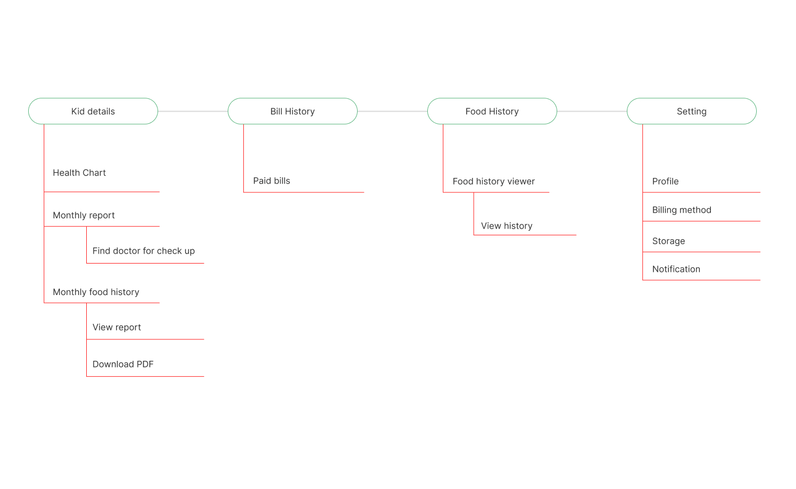
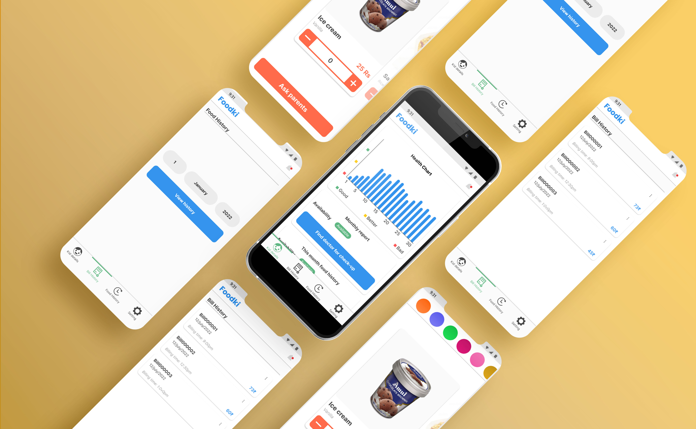

Food application for kids

Challenge
Today both parents are going to job. So, parents have difficulties finding what their kids like to eat, keeping track of their nutrients, and feeding them when they are away from them.
Solution
- Designing a food delivery application that helps kids order the food of liking with their parents' help.
- Helping parents to keep a track of their kids health.
Research
Goal
- Finding how parents keep a check on their kid's health. And finding a solution for the parents to gow their kids more healthy than before.
- Finding how can we make a kid use the application and bridge the gap between the kid and parents.
Secondary research
- There was more data or another application on the food application for kids. I started gathering information from the internet and articles on the internet.
They like colors which are contrast colors like blue, green, yellow,
orange, red, voilet, etc,.
They like shapes that are not sharp like circle. Shapes that are well
rounded.
Interview with parents
- I met some working parents and interviewed them to find what are the pain points they have.
"I like to give more concentration to my kid's health. But due
to work, I could not concentrate on my kid's health. So, I have
to sacrifice my job and passion."
Interview with dietician
- She gave me many tips on what kids like to eat, how to serve food to kids, and some food psychology for kids.

Wireframing
Many solutions was wireframed during the section and the final one has been projected here.
Kids application wireframing

Parents application wireframing

Site map

Final product
